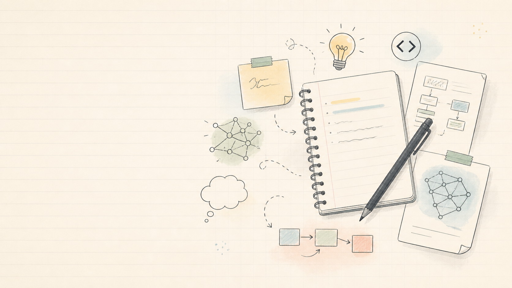

Opening the First Page
A small first entry for this notebook: why I am keeping a public space for research notes, teaching reflections, experiments, and the unfinished questions that keep pulling me forward.
Open the page →Stories & experiments
Stories I want to share about science experiments, personal experiences, and lessons I picked up along the way.
now it's time in your place --:--:-- am pm

A small first entry for this notebook: why I am keeping a public space for research notes, teaching reflections, experiments, and the unfinished questions that keep pulling me forward.
Open the page →Notes from the last 3 months.
A small first entry for this notebook: why I am keeping a public space for research notes, teaching reflections, experiments, and the unfinished questions that keep pulling me forward.
Open the page →No recent notes under this category.
All published notes.
A small first entry for this notebook: why I am keeping a public space for research notes, teaching reflections, experiments, and the unfinished questions that keep pulling me forward.
Open the page →No posts under this category yet.
Closing note
This space will grow with science experiments, reflections, experiences, and lessons as real stories are added.
Share an idea →